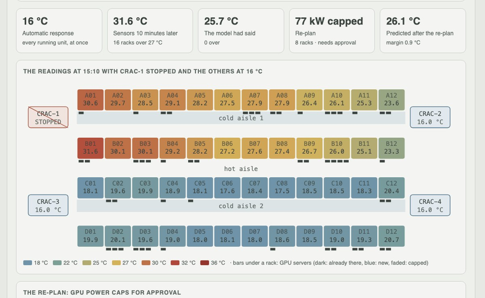
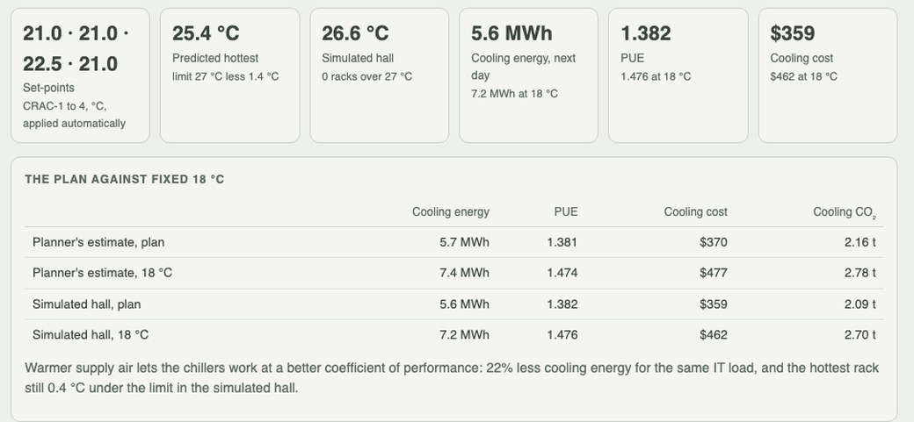
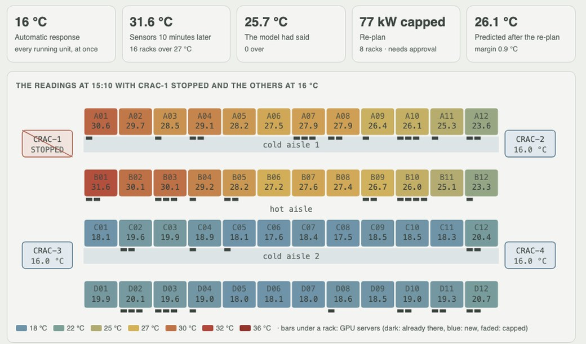

Python · thermal surrogate · MILP / LP · 2026-10
Where Can 240 kW of GPUs Go, and What Happens When a CRAC Fails?
A thermal model fitted to sixty days of an invented hall's sensors places 24 GPU training servers, raises the set-points (22% less cooling energy) and, when a CRAC unit stops, acts on the sensors instead of itself: the model said 25.7 °C, the hall reached 36.4 °C, and a re-plan with 77 kW of approved power caps brought every rack back under 27 °C.

Built from a written blueprint as one vertical slice. The hall is simulated: racks, loads, sensors, CRAC units, prices and the physics that moves heat through the room come from a lumped simulator in the repository, not CFD and not a real data center. The models see only the simulated sensor readings and the inventory; the simulator's true temperatures are used only to score them. No language model is used. Not built: CFD, job migration or pausing, chiller plant and humidity, carbon-aware scheduling, Kafka, Terraform, single sign-on.
01 — The problem
An AI compute operator is about to rack 24 more GPU training servers, 240 kW, in a hall that already runs 416 kW. Where should they go, how warm can the cooling run afterwards, and what happens when one of the four CRAC units stops at the afternoon peak? A thermal model can answer the first two cheaply from the hall's own sensor history. The third is the dangerous one: the history has never shown an aisle short of air. Can a model fitted to the sensors place the load, save cooling energy, and still keep the racks under 27 °C when something happens that it has never seen?
Blueprint 19 of twenty in a fourth build book, built as its demo scenario end to end.
02 — What I built
A Python service on PostgreSQL with a background worker and a web page, started by one docker compose up.
- A simulated hall: 48 racks in two cold aisles, four CRACs, supply-air mixing, recirculation strongest at the row ends, hidden airflow starvation, sensor offsets and noise, sixty days of hourly telemetry.
- A thermal surrogate per rack, fitted to the readings by bounded ridge regression, checked on held-back days and on each unit's held-out maintenance stop, promoted only if it beats the design rule.
- Placement by MILP against the scheduler's first fit, and set-points by LP with a safety margin that doubles outside the fitted load.
- A closed loop for a CRAC failure: a model-free automatic response, the sensors read, the model corrected, an LP re-plan of set-points and GPU power caps, approved by the facility manager.
03 — How it was built
- 01
A hall and sixty days of sensors
Four rows of twelve racks facing two cold aisles, a CRAC unit at each end of each aisle, 27 GPU servers already installed. Sixty days of hourly readings, 218,524 of them: inlet temperature at the top of every rack, power on each rack's CPU and GPU branches, each unit's supply temperature and status, including one eight-hour maintenance stop per unit. Live readings are checked one by one; an unknown sensor, an 85 °C inlet and a timestamp from the future are refused.
why = ("unknown sensor" if not s else "timestamp has no time zone" if r.at.tzinfo is None else "timestamp is in the future" if r.at > now + 5 min else ...) - 02
A thermal model from the readings alone
Per rack: the supply air of each unit (a stopped unit's share comes from the running ones), which units were stopped, and the power of every rack in the aisle, by ridge regression with no negative heat or supply terms. On ten held-back days it is off by 0.22 °C against 0.81 °C for the design rule of thumb, supply air plus 1.5 °C. It finds the true recirculation pattern (correlation 0.67 across racks, 9% high on average). The margin it plans with is its 99th-percentile error, 0.7 °C.
b = lsq_linear(ridge_augmented(X), y, bounds=(lo, inf)).x # heat and supply terms >= 0 - 03
Placing the surge, then running warmer
First fit puts all 24 servers in row A, aisle 1 at 519 kW against 246 kW. The MILP spreads them (439 / 326 kW), predicting a hottest inlet of 22.3 °C against 25.5 °C. The surge is beyond anything in the history, so the margin doubles to 1.4 °C and each aisle's airflow is held under 85% of what its units deliver. The set-point LP then raises the units to 21 / 21 / 22.5 / 21 °C: in the simulated hall the hottest rack reaches 26.6 °C and cooling energy falls from 7.2 to 5.6 MWh for the day.
res = linprog(-ones, A_ub=B, b_ub=27 - margin - c - A @ load, bounds=[(16, 27)] * running) - 04
A CRAC fails, and the model is not trusted
Asked what happens if CRAC-1 stops, the model predicts 25.7 °C and nothing over the limit; the simulated hall would reach 36.4 °C with 24 racks over 27 °C. The model flags itself: aisle 1 would need 138% of its remaining air and the most it had seen was 80%. So the automatic response needs no model: every running unit to 16 °C. Ten minutes later the sensors read 31.6 °C with 16 racks over. The gap between readings and prediction is taken as starvation that shrinks as airflow use falls, and an LP proposes caps on eight racks, 77 kW of GPU power.
kappa = where(starving, clip(read - pred, 0) / (use - 0.85), 0) sp, cap = replan(m, inv, load, gpu, on, margin, offset=offset, kappa=kappa) - 05
Approval, and the outcome in the hall
Caps slow customers' training jobs, so the operator cannot apply them; the facility manager does. The simulated hall then runs the rest of the day at 25.1 °C at worst, no rack over 27 °C, 69 kW of GPU power given up. Every decision is stored with its model version, inputs hash, confidence and policy state, and every step is in a hash-chained audit log.
if "actions:approve" not in PERMISSIONS[ctx.role]: raise Problem(403, "forbidden", "approval needs the facility manager")
04 — Results
The demo. The set-point plan against fixed 18 °C, planned and in the simulated hall:

CRAC-1 stopped, the other units at 16 °C, ten minutes later:

On five other simulated halls (each unit stopped in turn after each placement, 40 failures):
| System | Baseline | |
|---|---|---|
| Model error, ordinary days | 0.22 °C (0.29–0.34 vs true inlet) | 0.72–0.86 °C design rule |
| Cooling energy saved vs 18 °C | 23–29% thermal-aware | 7–21% first fit |
| Unit stops, thermal-aware: any rack over 27 °C | 0 of 20, 19 kW capped on average | 7 of 20 runbook; 20 of 20 no action |
| Unit stops, first fit | 0 of 20, 75 kW capped; 3 needed the fallback | 10 of 20 runbook |
| Model's own failure prediction | flagged 4 of 32 real violations | 2.0–18.9 °C too cool |
The model is excellent inside its experience and blind outside it: with a unit stopped at surge load it predicted 2–19 °C too cool, and acting on it would have overheated racks. The closed loop works because it trusts the sensors. The runbook alone was not bad (13 of 20 thermal-aware failures stayed within the limit); the system's contribution there is the racks the runbook misses and caps sized to them. Placement barely mattered on an ordinary day and a lot when a unit failed.
Honest limits. A lumped simulator, not CFD; the model that scores is the generator; caps and set-points are the only levers.
Checks. 9 tests, including: supply air shifts every inlet one for one and a starved aisle runs hot, the surrogate beats the design rule with no negative terms, placement respects slots, rows and the airflow rule and beats first fit, the cooling plan keeps the margin, the closed loop caps only what it must and leaves no rack over the limit, the demo end to end, idempotent replay, approval rules, and one operator cannot see another's hall.
05 — What I'd do next
- CFD runs of starved-aisle cases to give the model the experience its history lacks.
- Pausing or migrating low-priority jobs as a lever beside power caps.
- Materialised hourly aggregates so reads stop rebuilding the forecast from raw telemetry.